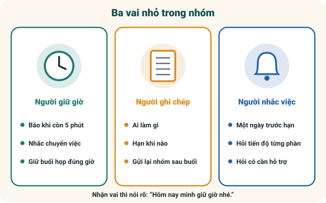

K9 · Lãnh đạo và phát triển người khác › Bậc 1 Làm quen
Nhận một vai nhỏ trong nhóm và chỉ bạn mới một việc
Lãnh đạo không bắt đầu từ chức danh. Ở Bậc 1, bạn tập bằng những vai nhỏ trong nhóm. Bài Bậc 2 tiếp theo: Điều phối một việc nhỏ của nhóm.
1. Mục tiêu
- Nhận và làm tốt một vai nhỏ trong nhóm: giữ giờ, ghi chép hoặc nhắc việc.
- Chỉ cho người mới một việc mình đã biết theo 4 bước.
2. Khởi động truy xuất
- Ba câu gợi ý để nghĩ ra cách khác là gì?
- Nêu ý tưởng cho nhóm trong 2 câu gồm những gì?
Đáp án
- Bỏ bớt; gộp hoặc đổi thứ tự; mượn cách.
- Câu 1: ý tưởng là gì. Câu 2: giúp được gì.
Xem lại: Hỏi "còn cách nào khác?".
3. Giải thích
Trong một nhóm, nhiều việc nhỏ không ai nhận. Không ai nhìn đồng hồ, nên họp kéo dài. Không ai ghi chép, nên hôm sau không nhớ đã chốt gì. Nhận một vai nhỏ là cách đầu tiên để dẫn dắt nhóm.
Ba vai nhỏ thường gặp:
Ba vai nhỏ trong nhóm
- Người giữ giờBáo khi còn 5 phút, nhắc nhóm chuyển sang việc tiếp theo.
- Người ghi chépGhi ai làm gì, hạn khi nào, gửi lại cho nhóm sau buổi làm.
- Người nhắc việcMột ngày trước hạn, nhắn hỏi tiến độ từng phần.
Nhận vai thì nói rõ: "Hôm nay mình giữ giờ nhé." Làm vai cho đến hết buổi, kể cả khi bận phần việc riêng.

Chỉ bạn mới một việc: 4 bước.
1. Nói mục đích 2. Làm mẫu, nói từng bước 3. Bạn làm thử 4. Khen một điểm, sửa một điểm
Bước 1. Nói mục đích. "Mình xếp hàng mới ra sau để hàng cũ bán trước, tránh hết hạn."
Bước 2. Làm mẫu, nói từng bước. Làm chậm, vừa làm vừa nói. Không làm nhanh rồi bảo "dễ mà".
Bước 3. Bạn làm thử. Để bạn tự làm trong khi bạn đứng xem. Đừng giành lại làm hộ.
Bước 4. Khen một điểm, sửa một điểm. Khen cụ thể việc làm đúng. Chỉ sửa điểm quan trọng nhất. Sửa quá nhiều cùng lúc, người mới khó nhớ.
Chỉ dạy việc bạn đã biết chắc. Việc liên quan an toàn hay máy móc, hãy để người phụ trách hướng dẫn.
4. Ví dụ tại nơi làm việc Việt Nam
Tình huống giả định. Tú làm thêm ở một nhà sách được 2 tháng. Hôm nay có bạn mới tên Vy. Quản lý nhờ Tú chỉ Vy cách bọc sách.
Tú làm như sau:
- Nói mục đích: "Bọc sách để khách mua làm quà, sách không bị trầy."
- Bọc mẫu một quyển, nói từng bước: đo giấy, gấp mép, dán băng dính.
- Đưa Vy bọc quyển tiếp theo, Tú đứng xem.
- "Vy gấp mép đẹp rồi. Băng dính dán ở mặt sau thì khách sẽ không thấy."
Vì sao cách này tốt: Tú nói lý do trước, làm mẫu chậm, để Vy tự làm. Tú khen một điểm và chỉ sửa một điểm.
5. Thực hành
Tình huống giả định. Nhóm bạn 5 người làm bài thuyết trình. Buổi họp nhóm lần trước kéo dài 2 tiếng, cuối buổi không ai nhớ đã phân công gì.
Chọn một vai nhỏ cho mình. Viết câu nhận vai và 2 việc bạn sẽ làm trong buổi họp tới.
Gợi ý 1
Vấn đề có hai phần: họp quá dài và không nhớ phân công. Mỗi phần ứng với một vai.
Lời giải mẫu
Nhận vai ghi chép: "Buổi này mình ghi chép nhé." Việc 1: ghi ai làm phần nào, hạn khi nào. Việc 2: gửi bảng phân công vào nhóm chat ngay sau buổi họp.
Hoặc vai giữ giờ: "Mình giữ giờ, mình họp 45 phút nhé." Việc 1: báo khi còn 10 phút. Việc 2: nhắc chốt phân công trước khi hết giờ.
6. Tự kiểm tra
Chọn đáp án. Mỗi lựa chọn đều có giải thích.
Câu 1. Nhóm bạn hay quên đã phân công gì. Vai nào giúp nhất?
-
Chưa đúng. Giữ giờ giúp họp đúng thời gian, nhưng không giữ lại phân công.
-
Đúng. Đúng. Bản ghi gửi lại cho nhóm giúp mọi người nhớ phân công.
-
Chưa đúng. Tự nhớ chính là lý do nhóm hay quên.
Câu 2. Khi chỉ bạn mới, bước nào nên làm đầu tiên?
-
Chưa đúng. Làm nhanh thì người mới khó theo kịp. Nên làm chậm và nói từng bước.
-
Đúng. Đúng. Biết lý do giúp người mới nhớ cách làm và làm đúng hơn.
-
Chưa đúng. Người mới chưa biết gì thì mày mò dễ làm sai.
Câu 3. Bạn mới làm thử và sai 3 chỗ. Bạn nên phản hồi thế nào?
-
Chưa đúng. Sửa nhiều điểm cùng lúc, người mới khó nhớ.
-
Đúng. Đúng. Mỗi lần sửa một điểm quan trọng, người mới tiến bộ dần.
-
Chưa đúng. Làm hộ thì người mới không học được.
Câu 4. Bạn mới hỏi cách dùng máy cắt giấy công nghiệp. Bạn mới dùng máy này 2 lần. Bạn làm gì?
-
Chưa đúng. Việc liên quan an toàn mà mình chưa chắc thì không nên tự dạy.
-
Đúng. Đúng. Chỉ dạy việc mình biết chắc. Việc an toàn để người phụ trách hướng dẫn.
-
Chưa đúng. Máy nguy hiểm cần người có kinh nghiệm hướng dẫn trực tiếp.
7. Phản tư
- Trong nhóm bạn đang tham gia, việc nhỏ nào thường không ai nhận?
- Lần gần nhất có người chỉ bạn một việc, họ làm điều gì khiến bạn dễ hiểu?
8. Áp dụng thật
Trong 7 ngày tới, nhận một vai nhỏ trong một buổi làm nhóm và làm đến hết buổi. Nếu có dịp, chỉ cho một người một việc theo 4 bước. Ghi lại người đó làm được đến đâu.
9. Siêu dữ liệu
| skill | K9 · Lãnh đạo và phát triển người khác |
|---|---|
| level | Bậc 1 · Làm quen |
| group | N2 |
| framework_map | WEF: Leadership and social influence; SkillsFuture CCS: Developing People; NACE: Leadership (chỉ dẫn chiếu) |
| updated | 2026-11-14 |
Hoàn thành bài
Đánh dấu đã học để site gợi ý lịch ôn sau 1, 3 và 7 ngày. Dữ liệu chỉ lưu trên máy của bạn.
Lịch ôn gợi ý: